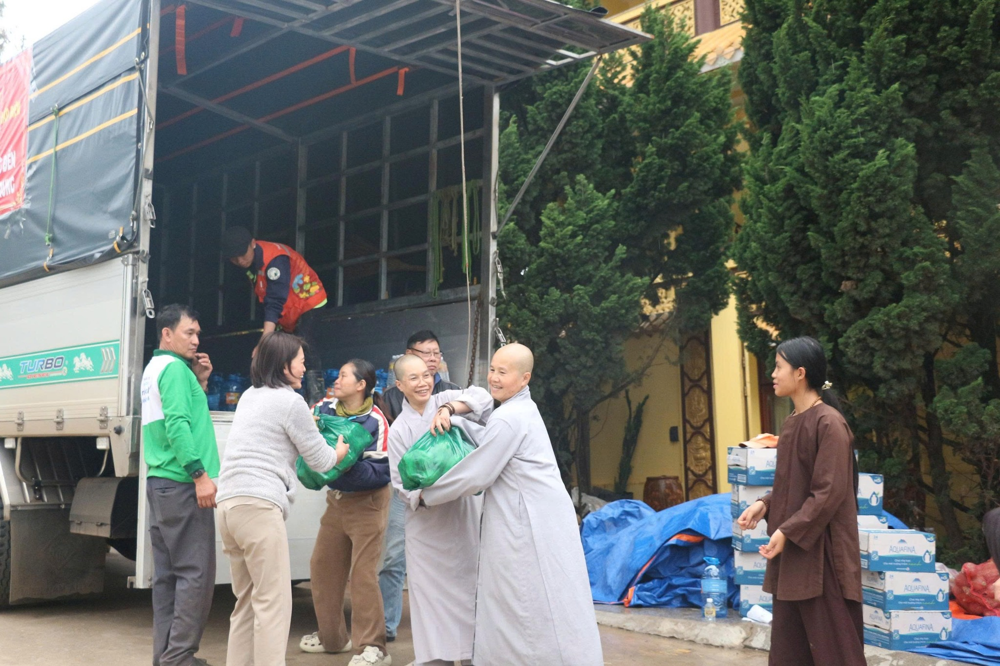
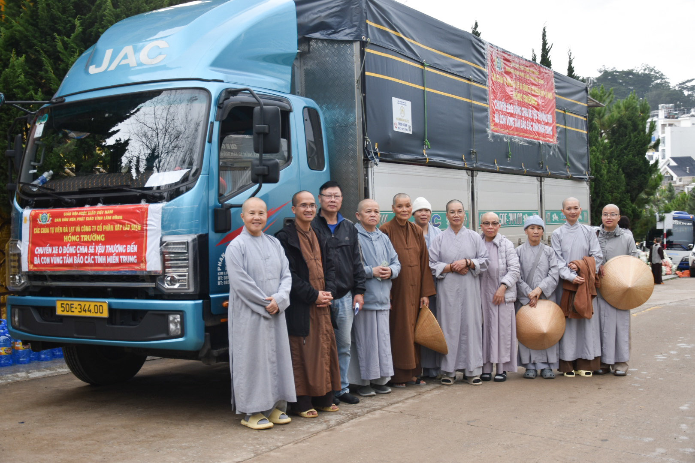
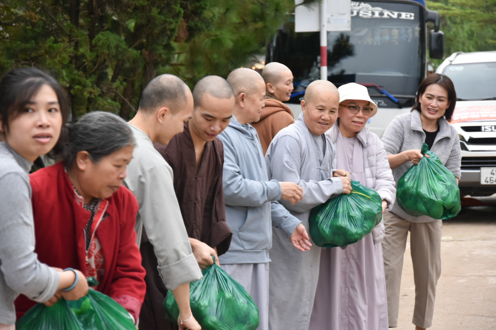

Chùa Tâm Ấn tọa lạc bình yên trên con đường Đinh Tiên Hoàng,
hiện lên như một ngôi chùa nhiệm mầu giữa chốn nhân gian.
Ngôi già lam khoác lên mình một sắc vàng rực rỡ nhưng không hề phô trương;
màu vàng ấy thanh tao, ấm áp, tựa như ánh sáng từ sắc thân Như Lai đang tỏa rạng,
chiếu soi và xoa dịu mọi muộn phiền của nẻo luân hồi.
Nơi đây chẳng cần quá ồn ào hay náo nhiệt,
nhưng vẫn uy nghiêm và hùng vĩ giữa đất trời.
Mặc cho sự chi phối của vô thường hay sự xô đẩy của bát phong
(tám ngọn gió thế gian: được – mất, khen – chê, vinh – nhục, vui – buồn),
Tâm Ấn vẫn tĩnh tại, kiên cố như tâm bồ đề chẳng bao giờ thối chuyển.
Nơi chốn thiền môn thanh tịnh ấy,
lời thệ nguyện từ bi vẫn ngày đêm vang vọng khắp cả trời xanh.
Từ ân đức khai sơn tạo tự của
Sư ông Thích Tâm Ấn
đến sự tiếp nối vĩ đại của
Sư bà Thích Nữ Minh Diệu,
bao thế hệ chư tôn đức đã dốc lòng gìn giữ hạnh nguyện cao cả.
Bậc xuất trần thượng sĩ – những người con trai, con gái của Đức Như Lai –
đã dóng lên tiếng chuông thệ nguyện sâu xa vang khắp cả đất trời:
Nguyện một lòng gìn giữ giới pháp thiêng liêng của Thế Tôn,
nguyện thấu triệt và thấm nhuần chân lý nhiệm mầu,
và nguyện hoằng độ hết thảy chúng sanh đang đắm chìm trong biển khổ sinh tử.
Chính nhờ những hạnh nguyện cao xa và vô lậu ấy,
ngôi già lam ngày càng phát triển hưng thịnh;
sự vững bền ấy không đến từ vật chất thế gian,
mà được vun bồi bởi giới đức trang nghiêm
và bi nguyện rộng lớn của các bậc trụ trì.
Bước qua cổng tam quan,
bỏ lại sau lưng bao tà kiến và sự trần ai,
mỗi người Phật tử khi trở về Tâm Ấn tự
đều tìm thấy một bến đỗ bình an cho tâm hồn.
Ngôi chùa không chỉ là mái ngói cội bồ đề che mưa nắng,
mà còn là ngọn hải đăng soi đường chỉ lối
cho những ai đang lạc bước trong đêm dài vô minh.
Hương thơm của chốn già lam này
không phải là hương trầm vật chất,
mà là thứ hương thơm của giới luật và đức hạnh.
Đúng như lời Đức Phật đã dạy trong Kinh Pháp Cú (Câu 54):
"Hương các loài hoa thơm,
Không ngược bay chiều gió.
Nhưng hương người đức hạnh,
Ngược gió khắp tung bay."
Chùa Tâm Ấn chính là minh chứng sống động cho câu kinh ấy.
Dù cõi sa bà có lắm nỗi truân chuyên,
uy đức và lòng từ bi của chư vị tăng ni nơi đây
vẫn ngược gió trần gian mà lan tỏa muôn phương,
hóa độ bao người quay về nẻo giác.
Để khép lại bức tranh về một ngôi chùa thiêng liêng,
nơi những bậc chân tu ngày đêm tĩnh lặng độ đời,
xin gửi tặng bốn câu thơ mang đậm chất vị giải thoát:
Đại nguyện từ bi độ chúng sanh,
Trần ai huyễn mộng bặt lợi danh.
Bát phong chẳng động tâm vô ngã,
Bát nhã thuyền từ vượt tử sanh.


